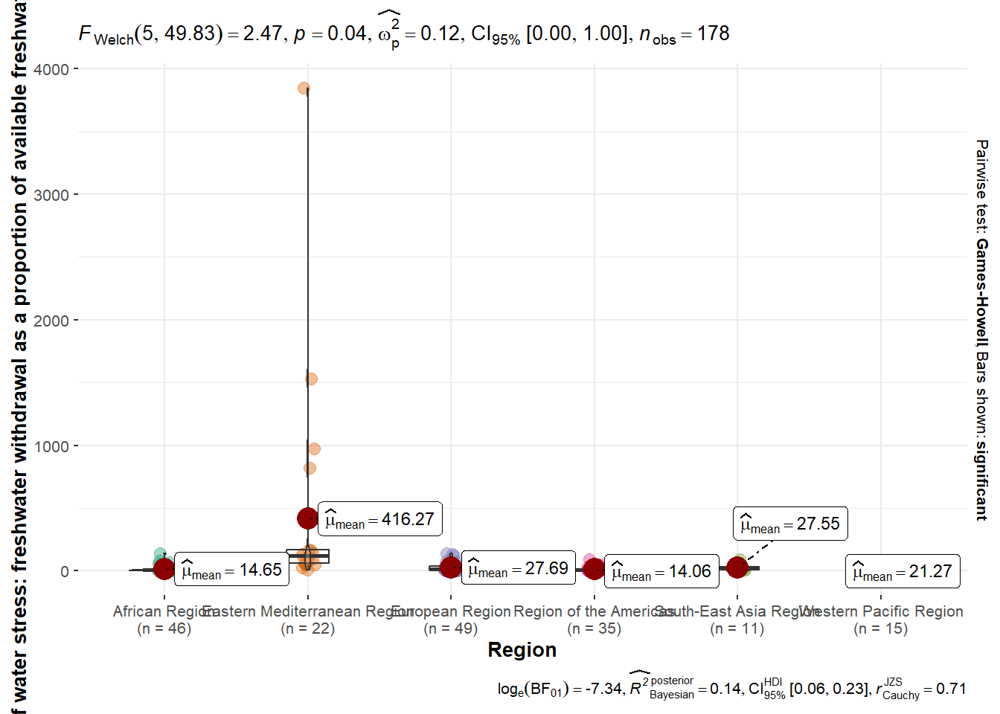
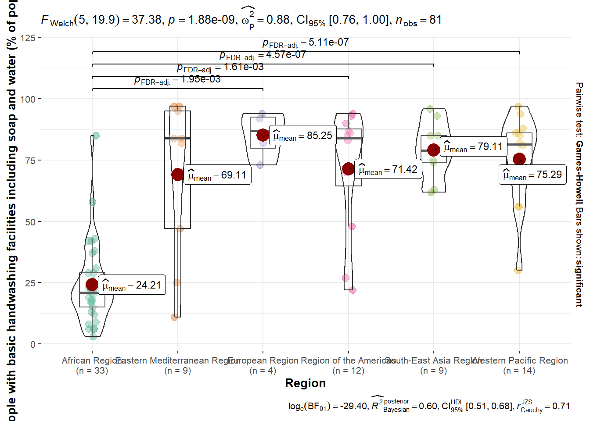

pacman::p_load(tidyverse,readxl,ggcorrplot, ggstatsplot, GGally,
SmartEDA, easystats, gtsummary, ggstatsplot,
parallelPlot,treemap, treemapify, tidyverse,tibble, d3treeR,ggstatsplot,ggdist, ggridges, ggthemes,
colorspace)Geospatial Data Analysis
1. Installing and Launching R Packages
2 Data Wrangling
2.1 Importing the data set
In the code chunk below, read_csv() of readr is used to import WDI Country Data.csv into R and parsed it into tibble R data.frame format.
water_indicators <- read.csv("WDICountryData.csv")2.2 Data summary
Function ExpData() comes from the SmartEDA package in R and The type = 2 argument specifies the type of analysis to perform.
water_indicators %>%
ExpData(type = 2) Index Variable_Name Variable_Type Sample_n Missing_Count Per_of_Missing
1 1 Series.Name character 2662 3 0.001
2 2 Series.Code character 2660 5 0.002
3 3 Country.Name character 2660 5 0.002
4 4 Country.Code character 2660 5 0.002
5 5 Region character 2660 5 0.002
6 6 X2000..YR2000. character 2660 5 0.002
7 7 X2001..YR2001. character 2660 5 0.002
8 8 X2002..YR2002. character 2660 5 0.002
9 9 X2003..YR2003. character 2660 5 0.002
10 10 X2004..YR2004. character 2660 5 0.002
11 11 X2005..YR2005. character 2660 5 0.002
12 12 X2006..YR2006. character 2660 5 0.002
13 13 X2007..YR2007. character 2660 5 0.002
14 14 X2008..YR2008. character 2660 5 0.002
15 15 X2009..YR2009. character 2660 5 0.002
16 16 X2010..YR2010. character 2660 5 0.002
17 17 X2011..YR2011. character 2660 5 0.002
18 18 X2012..YR2012. character 2660 5 0.002
19 19 X2013..YR2013. character 2660 5 0.002
20 20 X2014..YR2014. character 2660 5 0.002
21 21 X2015..YR2015. character 2660 5 0.002
22 22 X2016..YR2016. character 2660 5 0.002
23 23 X2017..YR2017. character 2660 5 0.002
24 24 X2018..YR2018. character 2660 5 0.002
25 25 X2019..YR2019. character 2660 5 0.002
26 26 X2020..YR2020. character 2660 5 0.002
27 27 X2021..YR2021. character 2660 5 0.002
No_of_distinct_values
1 13
2 11
3 267
4 267
5 8
6 1856
7 1870
8 1886
9 1886
10 1894
11 1915
12 1940
13 1948
14 1973
15 1980
16 2004
17 2023
18 2041
19 2050
20 2054
21 2047
22 2044
23 2032
24 2008
25 1993
26 1965
27 19452.3 Data Cleaning
water_indicators[6:27] <- lapply(water_indicators[6:27], function(x) as.numeric(as.character(x)))Warning in FUN(X[[i]], ...): NAs introduced by coercion
Warning in FUN(X[[i]], ...): NAs introduced by coercion
Warning in FUN(X[[i]], ...): NAs introduced by coercion
Warning in FUN(X[[i]], ...): NAs introduced by coercion
Warning in FUN(X[[i]], ...): NAs introduced by coercion
Warning in FUN(X[[i]], ...): NAs introduced by coercion
Warning in FUN(X[[i]], ...): NAs introduced by coercion
Warning in FUN(X[[i]], ...): NAs introduced by coercion
Warning in FUN(X[[i]], ...): NAs introduced by coercion
Warning in FUN(X[[i]], ...): NAs introduced by coercion
Warning in FUN(X[[i]], ...): NAs introduced by coercion
Warning in FUN(X[[i]], ...): NAs introduced by coercion
Warning in FUN(X[[i]], ...): NAs introduced by coercion
Warning in FUN(X[[i]], ...): NAs introduced by coercion
Warning in FUN(X[[i]], ...): NAs introduced by coercion
Warning in FUN(X[[i]], ...): NAs introduced by coercion
Warning in FUN(X[[i]], ...): NAs introduced by coercion
Warning in FUN(X[[i]], ...): NAs introduced by coercion
Warning in FUN(X[[i]], ...): NAs introduced by coercion
Warning in FUN(X[[i]], ...): NAs introduced by coercion
Warning in FUN(X[[i]], ...): NAs introduced by coercion
Warning in FUN(X[[i]], ...): NAs introduced by coercionChanging column name
water_long <- water_indicators %>%
pivot_longer(
cols = starts_with("X"),
names_to = "Year",
values_to = "Value"
)water_long <- water_long %>%
mutate(Year = gsub("X(\\d{4})\\.\\..*", "\\1", Year),
Year = as.numeric(Year),
Value = as.numeric(Value)) First, we will select latest records in 2021 for nine indicator.
water_long_selected <- water_long %>%
filter(Year == 2021)water_long_selected[water_long_selected == ".."] <- NA
water_long_selected[water_long_selected == "#N/A"] <- NA
water_long_selected[water_long_selected == ""] <- NA3.Designing Treemap with treemap Package
3.1 Designing a static treemap
treemap package is a R package specially designed to offer great flexibility in drawing treemaps. The core function, namely: treemap() offers at least 43 arguments. In this section, we will only explore the major arguments for designing elegent and yet truthful treemaps.
unique(water_long_selected[[1]]) [1] "Population, total"
[2] "Level of water stress: freshwater withdrawal as a proportion of available freshwater resources"
[3] "People using at least basic drinking water services (% of population)"
[4] "People using safely managed drinking water services (% of population)"
[5] "People with basic handwashing facilities including soap and water (% of population)"
[6] "Water productivity, total (constant 2015 US$ GDP per cubic meter of total freshwater withdrawal)"
[7] "People using at least basic sanitation services (% of population)"
[8] "People using safely managed sanitation services (% of population)"
[9] "People practicing open defecation (% of population)"
[10] "Population density (people per sq. km of land area)"
[11] NA
[12] "Data from database: World Development Indicators"
[13] "Last Updated: 01/28/2025" Next, reshape the data for 2021 and change data type
water_long_selected_reshape <- water_long_selected %>%
select(Country = Country.Name, Region, Variable = Series.Name, Value) %>%
pivot_wider(names_from = Variable, values_from = Value) %>%
drop_na("Region")Warning: Values from `Value` are not uniquely identified; output will contain list-cols.
• Use `values_fn = list` to suppress this warning.
• Use `values_fn = {summary_fun}` to summarise duplicates.
• Use the following dplyr code to identify duplicates.
{data} |>
dplyr::summarise(n = dplyr::n(), .by = c(Country, Region, Variable)) |>
dplyr::filter(n > 1L)water_long_selected_reshape$`Population, total` <- as.numeric(gsub(",", "", water_long_selected_reshape$`Population, total`))3.2 Using the basic arguments
The code chunk below designed a treemap by using three core arguments of treemap(), namely: index, vSize and vColor.
3.2.1 Visualizing Level of water stress: freshwater withdrawal as a proportion of available freshwater resources by country and region
water_long_selected_reshape_1 <- water_long_selected_reshape %>%
drop_na("Level of water stress: freshwater withdrawal as a proportion of available freshwater resources")tm1 <- treemap(water_long_selected_reshape_1,
index = c("Region", "Country"),
vSize = "Population, total",
vColor = `Level of water stress: freshwater withdrawal as a proportion of available freshwater resources`,
type = "index",
palette="RdYlBu",
title = "Level of water stress, 2021",
title.legend = "Level of water stress"
)3.2.2 Visualizing Water productivity, total (constant 2015 US$ GDP per cubic meter of total freshwater withdrawal)
water_long_selected_reshape_2 <- water_long_selected_reshape %>%
drop_na(`Water productivity, total (constant 2015 US$ GDP per cubic meter of total freshwater withdrawal)`)tm2 <- treemap(water_long_selected_reshape_2,
index = c("Region", "Country"),
vSize = "Population, total",
vColor = `Water productivity, total (constant 2015 US$ GDP per cubic meter of total freshwater withdrawal)`,
type = "index",
palette="RdYlBu",
title = "Water productivity, 2021",
title.legend = "Water productivity"
)3.2.3 Visualizing People using safely managed drinking water services (% of population))
water_long_selected_reshape_3 <- water_long_selected_reshape %>%
drop_na("People using safely managed drinking water services (% of population)")tm3 <- treemap(water_long_selected_reshape_3,
index = c("Region", "Country"),
vSize = "Population, total",
vColor = "People using safely managed drinking water services (% of population)" ,
type = "index",
palette="Blues",
title = "safely managed drinking water services, 2021",
title.legend = "People using safely managed drinking water services (% of population)"
)3.2.4 Visualizing People using at least basic drinking water services (% of population)
water_long_selected_reshape_4 <- water_long_selected_reshape %>%
drop_na("People using at least basic sanitation services (% of population)")tm4 <- treemap(water_long_selected_reshape_4,
index = c("Region", "Country"),
vSize = "Population, total",
vColor = "People using at least basic drinking water services (% of population)" ,
type = "index",
palette="Blues",
title = "basic drinking water services, 2021",
title.legend = "People using at least basic drinking water services"
)3.2.5 Visualizing People with basic handwashing facilities including soap and water (% of population)
water_long_selected_reshape_5 <- water_long_selected_reshape %>%
drop_na("People with basic handwashing facilities including soap and water (% of population)")tm5 <- treemap(water_long_selected_reshape_5,
index = c("Region", "Country"),
vSize = "Population, total",
vColor = "People with basic handwashing facilities including soap and water (% of population)" ,
type = "index",
palette="Greens",
title = "People with basic handwashing facilities, 2021",
title.legend = "People with basic handwashing facilities"
)3.2.6 Visualizing People using at least basic sanitation services (% of population)
water_long_selected_reshape_6 <- water_long_selected_reshape %>%
drop_na("People using at least basic sanitation services (% of population)")tm6 <- treemap(water_long_selected_reshape_6,
index = c("Region", "Country"),
vSize = "Population, total",
vColor = "People using at least basic sanitation services (% of population)" ,
type = "index",
palette="Reds",
title = "basic sanitation services, 2021",
title.legend = "People using at least basic sanitation services (% of population)"
)3.2.7 Visualizing People using safely managed sanitation services (% of population)
water_long_selected_reshape_7 <- water_long_selected_reshape %>%
drop_na("People using safely managed sanitation services (% of population)")tm7 <- treemap(water_long_selected_reshape_7,
index = c("Region", "Country"),
vSize = "Population, total",
vColor = "People using safely managed sanitation services (% of population)" ,
type = "index",
palette="Reds",
title = "safely managed sanitation services, 2021",
title.legend = "People using safely managed sanitation services (% of population)"
)3.2.8 Visualizing People practicing open defecation (% of population)
water_long_selected_reshape_8 <- water_long_selected_reshape %>%
drop_na("People practicing open defecation (% of population)")tm8 <- treemap(water_long_selected_reshape_8,
index = c("Region", "Country"),
vSize = "Population, total",
vColor = "People practicing open defecation (% of population)" ,
type = "index",
palette="Purples",
title = "open defecation, 2021",
title.legend = "People practicing open defecation (% of population)"
)3.3 Designing An Interactive Treemap
d3tree() is used to build an interactive treemap
3.3.1 Level of water stress
d3tree(tm1,rootname = "Worldwide" )3.3.2 Water productivity
d3tree(tm2,rootname = "Worldwide" )3.3.3 Safely managed drinking water
d3tree(tm3,rootname = "Worldwide" )3.3.4 Basic drinking water services
d3tree(tm4,rootname = "Worldwide" )3.3.5 Basic handwashing facilities including soap and water
d3tree(tm5,rootname = "Worldwide" )3.3.6 At least basic sanitation services
d3tree(tm6,rootname = "Worldwide" )3.3.7 Safely managed sanitation services
d3tree(tm7,rootname = "Worldwide" )3.3.8 Practicing open defecation
d3tree(tm8,rootname = "Worldwide" )4. Oneway ANOVA Test: ggbetweenstats() method
ANOVA (Analysis of Variance) tests if the mean values of different groups are significantly different as we need statistical proof of differences, determining whether observed differences are statistically significant.
4.1 People using at least basic sanitation services (% of population)
water_long_selected_reshape_27 <- water_long_selected_reshape %>%
select('Country', 'Region',`People using at least basic sanitation services (% of population)`) %>%
mutate(Country = as.factor(Country))water_long_selected_reshape_27 <- water_long_selected_reshape_27 %>%
drop_na(`People using at least basic sanitation services (% of population)`) %>%
mutate(
`People using at least basic sanitation services (% of population)` =
round(as.numeric(`People using at least basic sanitation services (% of population)`), 0),
)ggbetweenstats(
data = water_long_selected_reshape_27,
x = Region,
y = `People using at least basic sanitation services (% of population)`,
type = "p",
mean.ci = TRUE,
pairwise.comparisons = TRUE,
pairwise.display = "significant",
p.adjust.method = "fdr",
messages = FALSE
)4.2 People using safely managed sanitation services (% of population)
water_long_selected_reshape_28 <- water_long_selected_reshape %>%
select('Country', 'Region',`People using safely managed sanitation services (% of population)`) %>%
mutate(Country = as.factor(Country))water_long_selected_reshape_28 <- water_long_selected_reshape_28 %>%
drop_na(`People using safely managed sanitation services (% of population)`) %>%
mutate(
`People using safely managed sanitation services (% of population)` =
round(as.numeric(`People using safely managed sanitation services (% of population)`), 0),
)ggbetweenstats(
data = water_long_selected_reshape_28,
x = Region,
y = `People using safely managed sanitation services (% of population)`,
type = "p",
mean.ci = TRUE,
pairwise.comparisons = TRUE,
pairwise.display = "significant",
p.adjust.method = "fdr",
messages = FALSE
)4.3 People using at least basic drinking water services (% of population)
water_long_selected_reshape_29 <- water_long_selected_reshape %>%
select('Country', 'Region',`People using at least basic drinking water services (% of population)`) %>%
mutate(Country = as.factor(Country))water_long_selected_reshape_29 <- water_long_selected_reshape_29 %>%
drop_na(`People using at least basic drinking water services (% of population)`) %>%
mutate(
`People using at least basic drinking water services (% of population)` =
round(as.numeric(`People using at least basic drinking water services (% of population)`), 0),
)ggbetweenstats(
data = water_long_selected_reshape_29,
x = Region,
y = `People using at least basic drinking water services (% of population)`,
type = "p",
mean.ci = TRUE,
pairwise.comparisons = TRUE,
pairwise.display = "significant",
p.adjust.method = "fdr",
messages = FALSE
)4.4 People using safely managed drinking water services (% of population)
water_long_selected_reshape_30 <- water_long_selected_reshape %>%
select('Country', 'Region',`People using safely managed drinking water services (% of population)`) %>%
mutate(Country = as.factor(Country))water_long_selected_reshape_30 <- water_long_selected_reshape_30 %>%
drop_na(`People using safely managed drinking water services (% of population)`) %>%
mutate(
`People using safely managed drinking water services (% of population)` =
round(as.numeric(`People using safely managed drinking water services (% of population)`), 0),
)ggbetweenstats(
data = water_long_selected_reshape_30,
x = Region,
y = `People using safely managed drinking water services (% of population)`,
type = "p",
mean.ci = TRUE,
pairwise.comparisons = TRUE,
pairwise.display = "significant",
p.adjust.method = "fdr",
messages = FALSE
)4.5 Water productivity, total (constant 2015 US$ GDP per cubic meter of total freshwater withdrawal)
water_long_selected_reshape_31 <- water_long_selected_reshape %>%
select('Country', 'Region',`Water productivity, total (constant 2015 US$ GDP per cubic meter of total freshwater withdrawal)`) %>%
mutate(Country = as.factor(Country))water_long_selected_reshape_31 <- water_long_selected_reshape_31 %>%
drop_na(`Water productivity, total (constant 2015 US$ GDP per cubic meter of total freshwater withdrawal)`) %>%
mutate(
`Water productivity, total (constant 2015 US$ GDP per cubic meter of total freshwater withdrawal)` =
round(as.numeric(`Water productivity, total (constant 2015 US$ GDP per cubic meter of total freshwater withdrawal)`), 0),
)ggbetweenstats(
data = water_long_selected_reshape_31,
x = Region,
y = `Water productivity, total (constant 2015 US$ GDP per cubic meter of total freshwater withdrawal)`,
type = "p",
mean.ci = TRUE,
pairwise.comparisons = TRUE,
pairwise.display = "significant",
p.adjust.method = "fdr",
messages = FALSE
)4.6 Level of water stress: freshwater withdrawal as a proportion of available freshwater resources
water_long_selected_reshape_32 <- water_long_selected_reshape %>%
select('Country', 'Region',`Level of water stress: freshwater withdrawal as a proportion of available freshwater resources`) %>%
mutate(Country = as.factor(Country))water_long_selected_reshape_32 <- water_long_selected_reshape_32 %>%
drop_na(`Level of water stress: freshwater withdrawal as a proportion of available freshwater resources`) %>%
mutate(
`Level of water stress: freshwater withdrawal as a proportion of available freshwater resources` =
round(as.numeric(`Level of water stress: freshwater withdrawal as a proportion of available freshwater resources`), 0),
)ggbetweenstats(
data = water_long_selected_reshape_32,
x = Region,
y = `Level of water stress: freshwater withdrawal as a proportion of available freshwater resources`,
type = "p",
mean.ci = TRUE,
pairwise.comparisons = TRUE,
pairwise.display = "significant",
p.adjust.method = "fdr",
messages = FALSE
)
4.7 People practicing open defecation (% of population)
water_long_selected_reshape_33 <- water_long_selected_reshape %>%
select('Country', 'Region',`People practicing open defecation (% of population)`) %>%
mutate(Country = as.factor(Country))water_long_selected_reshape_33 <- water_long_selected_reshape_33 %>%
drop_na(`People practicing open defecation (% of population)`) %>%
mutate(
`People practicing open defecation (% of population)` =
round(as.numeric(`People practicing open defecation (% of population)`), 0),
)ggbetweenstats(
data = water_long_selected_reshape_33,
x = Region,
y = `People practicing open defecation (% of population)`,
type = "p",
mean.ci = TRUE,
pairwise.comparisons = TRUE,
pairwise.display = "significant",
p.adjust.method = "fdr",
messages = FALSE
)4.8 People with basic handwashing facilities including soap and water (% of population)
water_long_selected_reshape_34 <- water_long_selected_reshape %>%
select('Country', 'Region',`People with basic handwashing facilities including soap and water (% of population)`) %>%
mutate(Country = as.factor(Country))water_long_selected_reshape_34 <- water_long_selected_reshape_34 %>%
drop_na(`People with basic handwashing facilities including soap and water (% of population)`) %>%
mutate(
`People with basic handwashing facilities including soap and water (% of population)` =
round(as.numeric(`People with basic handwashing facilities including soap and water (% of population)`), 0),
)ggbetweenstats(
data = water_long_selected_reshape_34,
x = Region,
y = `People with basic handwashing facilities including soap and water (% of population)`,
type = "p",
mean.ci = TRUE,
pairwise.comparisons = TRUE,
pairwise.display = "significant",
p.adjust.method = "fdr",
messages = FALSE
)
5. Distribution Analysis (Density Plot)
Density plot shows the smooth distribution of eight indicators and allow us to see the exact distribution shape.
Peaks → Common sanitation levels in different regions
Spread → Variability of sanitation access within each region
Skewness → If most values are concentrated on one side
Multiple Peaks → Presence of subgroups
5.1 People using at least basic sanitation services (% of population)
ggplot(water_long_selected_reshape_27, aes(x = `People using at least basic sanitation services (% of population)`)) +
geom_density(fill = "lightblue", alpha = 0.5) +
labs(title = "Density Plot of Basic Sanitation Access", x = "Percentage of Population", y = "Density")Warning: Removed 15 rows containing non-finite outside the scale range
(`stat_density()`).5.2 People using safely managed sanitation services (% of population)
ggplot(water_long_selected_reshape_28, aes(x = `People using safely managed sanitation services (% of population)`)) +
geom_density(fill = "lightblue", alpha = 0.5) +
labs(title = "Density Plot of safely managed sanitation services", x = "Percentage of Population", y = "Density")Warning: Removed 66 rows containing non-finite outside the scale range
(`stat_density()`).5.3 People using at least basic drinking water services (% of population)
ggplot(water_long_selected_reshape_29, aes(x = `People using at least basic drinking water services (% of population)`)) +
geom_density(fill = "lightyellow", alpha = 0.5) +
labs(title = "Density Plot of basic drinking water services", x = "Percentage of Population", y = "Density")Warning: Removed 13 rows containing non-finite outside the scale range
(`stat_density()`).5.4 People using safely managed drinking water services (% of population)
ggplot(water_long_selected_reshape_30, aes(x = `People using safely managed drinking water services (% of population)`)) +
geom_density(fill = "lightyellow", alpha = 0.5) +
labs(title = "Density Plot of safely managed drinking water services", x = "Percentage of Population", y = "Density")Warning: Removed 71 rows containing non-finite outside the scale range
(`stat_density()`).5.5 Water productivity, total (constant 2015 US$ GDP per cubic meter of total freshwater withdrawal)
ggplot(water_long_selected_reshape_31, aes(x = `Water productivity, total (constant 2015 US$ GDP per cubic meter of total freshwater withdrawal)`)) +
geom_density(fill = "lightpink", alpha = 0.5) +
labs(title = "Density Plot of Water productivity", x = "constant 2015 US$ GDP per cubic meter of total freshwater withdrawal", y = "Density")Warning: Removed 17 rows containing non-finite outside the scale range
(`stat_density()`).5.6 Level of water stress: freshwater withdrawal as a proportion of available freshwater resources
ggplot(water_long_selected_reshape_32, aes(x = `Level of water stress: freshwater withdrawal as a proportion of available freshwater resources`)) +
geom_density(fill = "lightpink", alpha = 0.5) +
labs(title = "Density Plot of Level of water stress", x = "freshwater withdrawal as a proportion of available freshwater resources", y = "Density")Warning: Removed 16 rows containing non-finite outside the scale range
(`stat_density()`).5.7 People practicing open defecation (% of population)
ggplot(water_long_selected_reshape_33, aes(x = `People practicing open defecation (% of population)`)) +
geom_density(fill = "lightgrey", alpha = 0.5) +
labs(title = "Density Plot of People practicing open defecation", x = "Percentage of Population", y = "Density")Warning: Removed 19 rows containing non-finite outside the scale range
(`stat_density()`).5.8 People with basic handwashing facilities including soap and water (% of population)
ggplot(water_long_selected_reshape_34, aes(x = `People with basic handwashing facilities including soap and water (% of population)`)) +
geom_density(fill = "lightblue", alpha = 0.5) +
labs(title = "Density Plot of basic handwashing facilities", x = "Percentage of Population", y = "Density")Warning: Removed 113 rows containing non-finite outside the scale range
(`stat_density()`).6. Regional Comparison: Boxplot
Boxplot allows us to compare the distribution, spread, and outliers of a variable across regions. Box with whiskers, showing median, interquartile range (IQR), and outliers.
6.1 People using at least basic sanitation services (% of population)
ggplot(water_long_selected_reshape_27, aes(x = Region, y = `People using at least basic sanitation services (% of population)`)) +
geom_boxplot(fill = "lightblue") +
labs(title = "Basic Sanitation Services By Region", x = "Region", y = "Percentage of Population") +
theme(axis.text.x = element_text(angle = 45, hjust = 1))Warning: Removed 15 rows containing non-finite outside the scale range
(`stat_boxplot()`).6.2 People using safely managed sanitation services (% of population)
ggplot(water_long_selected_reshape_28, aes(x = Region, y = `People using safely managed sanitation services (% of population)`)) +
geom_boxplot(fill = "lightblue") +
labs(title = "Safely Managed Sanitation Services By Region", x = "Region", y = "Percentage of Population") +
theme(axis.text.x = element_text(angle = 45, hjust = 1))Warning: Removed 66 rows containing non-finite outside the scale range
(`stat_boxplot()`).6.3 People using at least basic drinking water services (% of population)
ggplot(water_long_selected_reshape_29, aes(x = Region, y = `People using at least basic drinking water services (% of population)`)) +
geom_boxplot(fill = "lightyellow") +
labs(title = "Basic Drinking Water Services", x = "Region", y = "Percentage of Population") +
theme(axis.text.x = element_text(angle = 45, hjust = 1))Warning: Removed 13 rows containing non-finite outside the scale range
(`stat_boxplot()`).
6.4 People using safely managed drinking water services (% of population)
ggplot(water_long_selected_reshape_30, aes(x = Region, y = `People using safely managed drinking water services (% of population)`)) +
geom_boxplot(fill = "lightyellow") +
labs(title = "Safely Managed Drinking Water Services", x = "Region", y = "Percentage of Population") +
theme(axis.text.x = element_text(angle = 45, hjust = 1))Warning: Removed 71 rows containing non-finite outside the scale range
(`stat_boxplot()`).6.5 Water productivity, total (constant 2015 US$ GDP per cubic meter of total freshwater withdrawal)
ggplot(water_long_selected_reshape_31, aes(x = Region, y = `Water productivity, total (constant 2015 US$ GDP per cubic meter of total freshwater withdrawal)`)) +
geom_boxplot(fill = "lightpink") +
labs(title = "Water productivity",
x = "Region",
y = "constant 2015 US\\$ GDP per cubic meter of total freshwater withdrawal") +
theme(axis.text.x = element_text(angle = 45, hjust = 1))Warning: Removed 17 rows containing non-finite outside the scale range
(`stat_boxplot()`).6.6 Level of water stress: freshwater withdrawal as a proportion of available freshwater resources
ggplot(water_long_selected_reshape_32, aes(x = Region,
y = `Level of water stress: freshwater withdrawal as a proportion of available freshwater resources`)) +
geom_boxplot(fill = "lightpink") +
labs(title = "Level of water stress",
x = "Region",
y = "Freshwater withdrawal as a proportion of available freshwater resources") +
theme(axis.text.x = element_text(angle = 45, hjust = 1))Warning: Removed 16 rows containing non-finite outside the scale range
(`stat_boxplot()`).6.7 People practicing open defecation (% of population)
ggplot(water_long_selected_reshape_33, aes(x = Region,
y = `People practicing open defecation (% of population)`)) +
geom_boxplot(fill = "lightgrey") +
labs(title = "People Practicing Open Defecation",
x = "Region",
y = "Percentage of Population") +
theme(axis.text.x = element_text(angle = 45, hjust = 1))Warning: Removed 19 rows containing non-finite outside the scale range
(`stat_boxplot()`).
6.8 People with basic handwashing facilities including soap and water (% of population)
ggplot(water_long_selected_reshape_34, aes(x = Region,
y = `People with basic handwashing facilities including soap and water (% of population)`)) +
geom_boxplot(fill = "lightgrey") +
labs(title = "Basic Handwashing Facilities",
x = "Region",
y = "Percentage of Population") +
theme(axis.text.x = element_text(angle = 45, hjust = 1))Warning: Removed 113 rows containing non-finite outside the scale range
(`stat_boxplot()`).